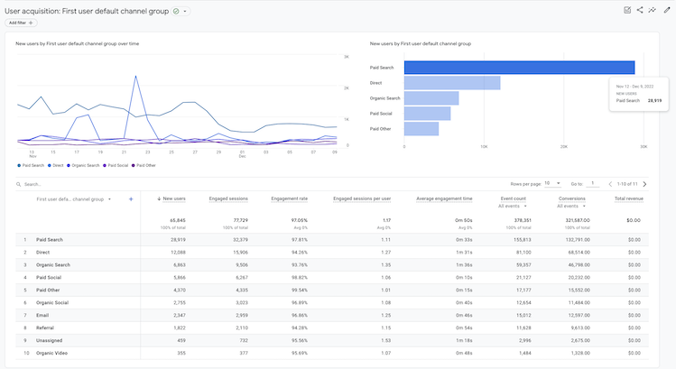
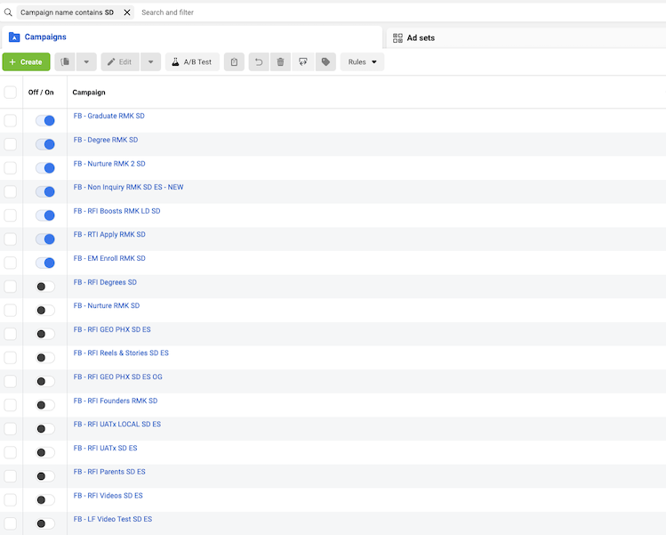
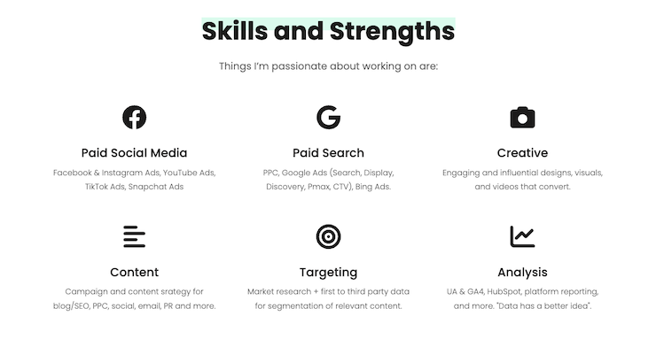

DIGITAL MARKETING DEGREE OBJECTIVES
- Understand inbound marketing and SEO strategies based on evolving trends in the market. An SEO blog (with inbound inquiry form) about GA4, a trending topic and important for any marketer focused on analytics.
- Create content that fosters the growth and engagement of a targeted audience. A resource guide for target audience of analytical marketers, seeking to learn and engage with GA4 resources.
- Design and implement digital marketing strategies that follow branding guidelines. A faux Digital Marketing agency website with branded content for digital marketing promotions.
- Identify basic KPIs (Key Performance Indicators) through analytics for conversion optimization. Artifacts display and demonstrate analytics reports utilized for KPI tracking and conversion optimization activities.
- Cultivate leadership qualities through the development and management of marketing campaigns. Artifacts provide glimpses into campaign development and management experience for just one paid social platform and organization.
- Develop the ability to work with standard and emerging platforms used in the industry for digital advertising. Artifacts demonstrate the ability to work with standard and emerging platforms throughout the industry, represented in Student and Professional, real-world industry and work experience projects.
A link to Personal Portfolio site and SEO blog here:5 Fast Ways to Master GA4
Branded featured image for SEO blog here:
A link to branded marketer resource guide here:5 Fast Ways to Master GA4
Branded featured image for marketer resource guide here:
A link to branded website:Kempeling: A marketing team for your marketing team.
Branded digital marketing ads for paid social media placements here:

A link to video about utilizing analtyics to optimize for conversions:Analytics Placeholder
Snapshot of Analytics reports for conversion optimization:

A link to Personal Portfolio site with work experience and student projects highlighting campaign management:Campaign Management Experience
Snapshot of developed and managed campaigns for one marketing channel and two platforms:

A link to Personal Portfolio site including Work Experience, Paid Strategy, and Student Projects:Digital Advertising Experience
Digital Advertising experience sample:
